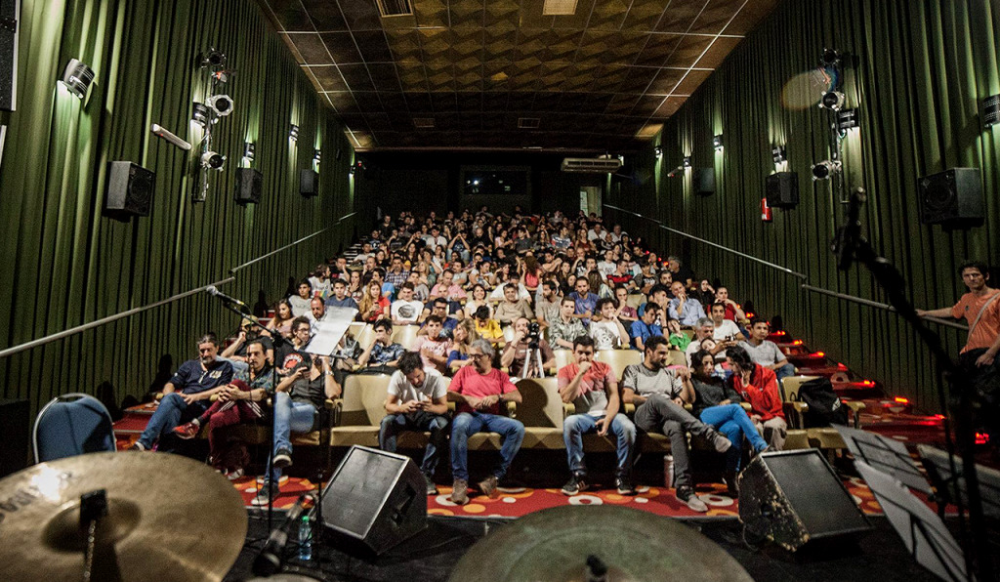
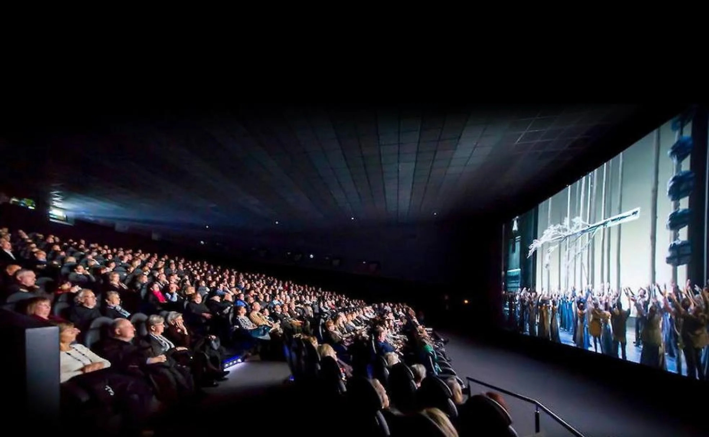

Para que Río Cuarto empiece a ser vista y reconocida como una ciudad audiovisual, el primer paso debe darse desde adentro: necesitamos que la propia comunidad se apropie de esta visión. El cine y la producción local no pueden quedarse en una burbuja de nicho; deben ser el espejo donde los vecinos se reconozcan y construyan un nuevo sentido de pertenencia e identidad.
En esta sección analizamos las tres estrategias de comunicación clave que los realizadores locales proponen para sembrar esta semilla en la comunidad. Exploramos el rol del Centro Cultural Leonardo Favio como punto de encuentro y debate vecinal; las alianzas estratégicas con organizaciones y movimientos sociales de la zona para transformar las pantallas en el megáfono de nuestras realidades; y el uso de plataformas digitales para abrir las puertas de los rodajes a las calles de la ciudad. Te invitamos a descubrir cómo la narrativa audiovisual busca conectar con la gente para impulsar este cambio cultural y social tan esperado.
La principal ventana de visibilización local es el Centro Cultural Leonardo Favio. Este espacio funciona como el nodo estratégico donde el cine riocuartense se encuentra con su público. Las estrategias de comunicación aquí no son masivas (como un comercial de televisión), sino comunitarias: debates post-proyección, festivales de cortometrajes universitarios y muestras temáticas coordinadas con escuelas secundarias de la región.
Cumpliendo con la base del proyecto multimedia, los realizadores locales pueden utilizar el formato documental o el spot de campaña como una herramienta de visibilización para terceros.
Productoras independientes de Río Cuarto se asocian con cooperativas de trabajo, colectivos ambientales (que defienden el bosque nativo del sur de Córdoba) o agrupaciones de derechos humanos. El realizador aporta la técnica y la narrativa digital; la organización aporta la historia y su base de seguidores en redes sociales. De esta forma, el contenido audiovisual se convierte en el "megáfono" de una problemática socio-cultural concreta.
Al no contar con los presupuestos de marketing de las grandes cadenas, las producciones locales deben apostar por estrategias digitales alternativas:
Instagram y TikTok como bitácoras: Mostrar el "detrás de escena" del rodaje en locaciones locales. Que los ciudadanos vean el detrás de escena de un largometraje grabado en las calles de su ciudad, generará un fuerte sentido de pertenencia y curiosidad en la comunidad antes del estreno.

